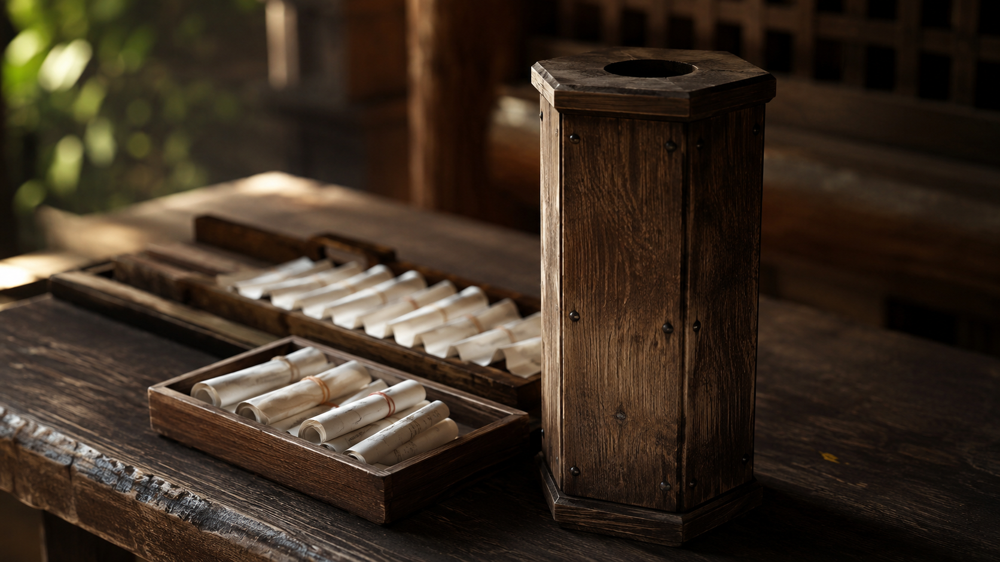
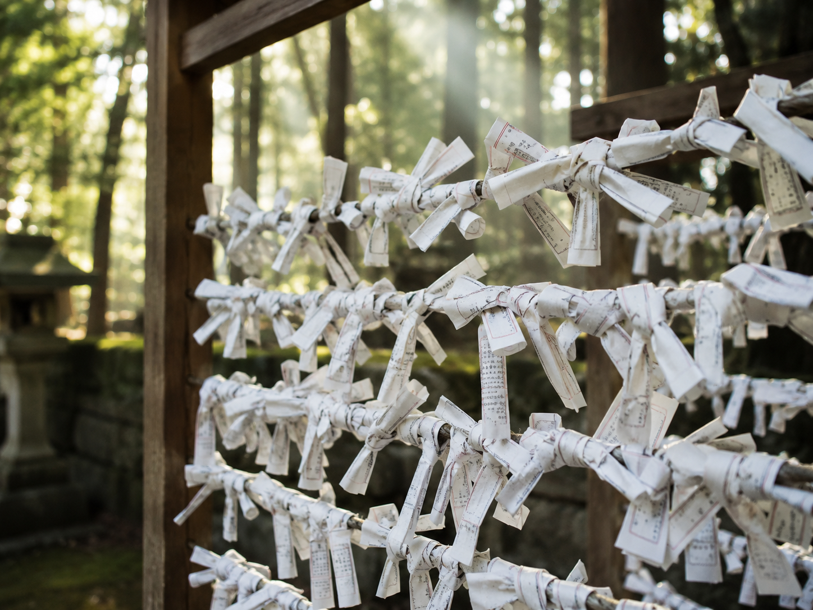
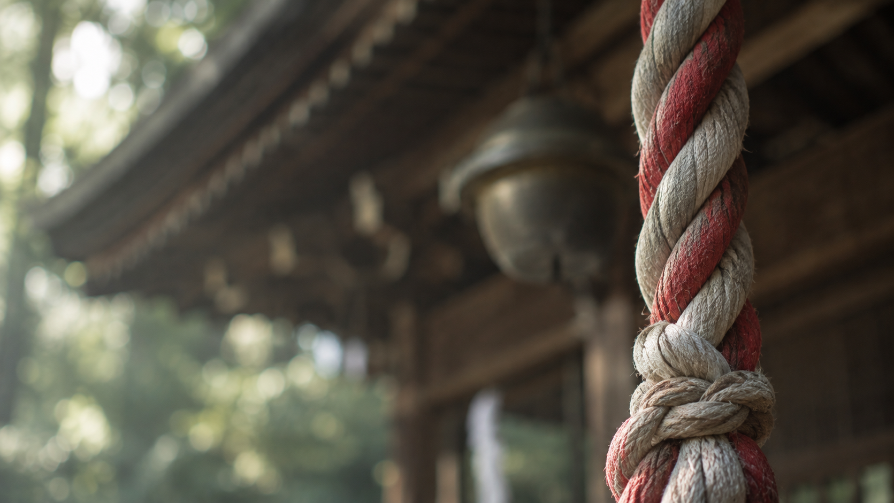

本日のおみくじ
心を静めて、今日の運勢をお受け取りください。

今日の運勢は……

結んで納める
御神籤掛けについて
引いたおみくじは、そのままお持ち帰りいただいても、境内の御神籤掛けに結んでお納めいただいても構いません。 結ぶ際は、心に浮かんだ迷いを共に結び留めるように、静かに一結びしてお納めください。

参拝マナー・心得
お参りの前に
- 鳥居をくぐる前には、軽く一礼をいたしましょう。
- 参道の中央は神様の通り道とされます。端を静かに歩きましょう。
- 手水舎では、まず左手、次に右手、最後に口をすすいで心身を清めます。
- ご神前では、二礼二拍手一礼にて、静かに願いをお伝えください。